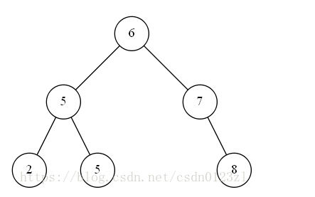

你心里没有点（______）吗
前言
二叉搜索树
说道B树。我觉得有必要先讲一下二叉搜索树
很传统的讲就是从根节点开始往左便利都是比根节点小的。往右遍历都是比根节点大的。通过这样一颗树能够把搜索的速度提高到常数级别logN。

平衡二叉树（动态演示）
二叉搜索树是存在极端的情况的。如果来的数值都是一边倒的情况。树的深度就会变成N。搜索的速度就很慢了。

`基于以上情况。平衡二叉树横空出世。`
平衡二叉树的概念是任意根节点的叶子树的深度差不过1

左边是平衡二叉。右边的不是。
说道平衡肯定是有平衡算法的。
分别是左旋

右旋

双旋

具体代码的话自己看吧。我觉得我们涉猎不到。这个md只做对数据库索引的了解。当面试官问起来的话能够吹的人家一愣一愣的。但是他要是问源码你就准备回家等通知吧。
B-tree
定义
B树其实也只是在二叉搜索树上做了一些改动而已

一个一个来分析。

- 根节点有2个子女不逼逼
- 每个中间节点都包换k-1个元素和k个孩子
其实就是如果节点元素有2个。那么子节点就有三个。分别处于小于最小的，两个中间的，和大于最大的3个范围。但是如果节点元素不够的话就是节点元素只有1个。下面是大于节点元素和小于节点元素的2个节点。 - 每一个叶子都应该包含k-1个元素。m/2<=k<=m，这里的m应该指的就是这个树的阶数，一个节点能拥有的最大子节点数来表示这颗树的阶数。
举个例子：
如果一个节点最多有 n 个key，那么这个节点最多就会有 n+1 个子节点，这棵树就叫做 n+1（m=n+1）阶树 - 其他的都很简单。不解释。
查找
不知道你们有没有疑问，这棵树是怎么查找的呢。。。在二叉搜索树的情况下我们都知道。小的往左，大的往右。到更节点还没找到就是没找到。
那B树又是怎么查找的呢。

其实也是大同小异。不过B树已经是可以用作数据库的索引了。
难点
我们知道了二叉搜索树的左旋右旋。但是在B树中。平衡算法更加的难。
- 首先从构建开始，以一颗5阶的B树为例，以C N G A H E K Q M F W L T Z D P R X Y S为元素
- 因为是5阶的树。每个中间节点可以容纳最多4个元素。
- 先拿到前四个元素CNGA 由于要满足左小右大的原则。先排个序在插入

- 当拿到H的时候发现节点的个数不能大于5.所以需要分裂，找到中间节点G。把它作为根节点。

- EKQ不需要做操作按照树的结构插入

- 插入M的时候又需要分裂得到

- 重复以上操作得到树为

- 现在只差最后的S节点。S处于满元素的叶子节点中。分裂之后上级节点也处于满的状态。需要把上级节点进行分裂。得到最后的图为

其实原理上和二叉树是差不多的。但是b树更加的矮胖。我们知道搜索树的便利次数和深度是相关的。越矮胖说明便利次数越少。
总结
也没啥总结。估计你们也没有看过B树。先了解一下。B树还是很接近数据库索引的底层了。之后的B+和B*才是重点。也不晓得面试会不会面这个。如果觉得太枯燥了想听算法或者技术的。我就不做B*和B+的md了。